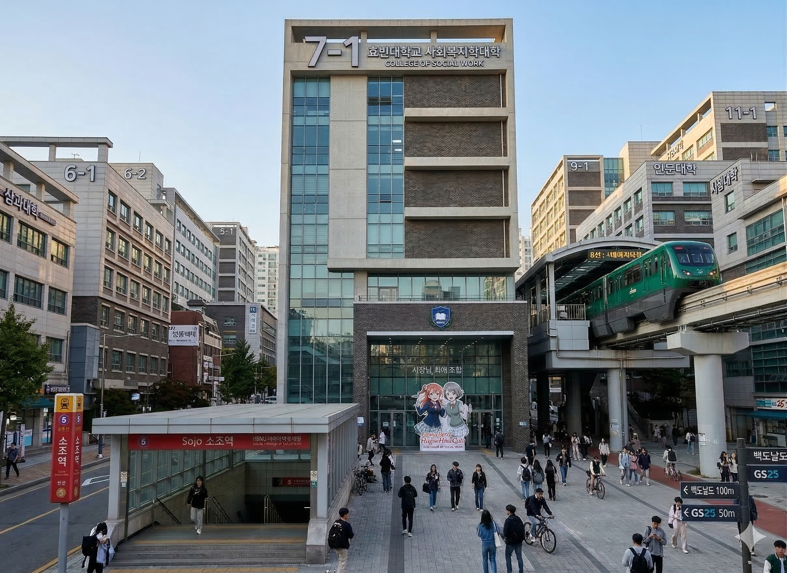
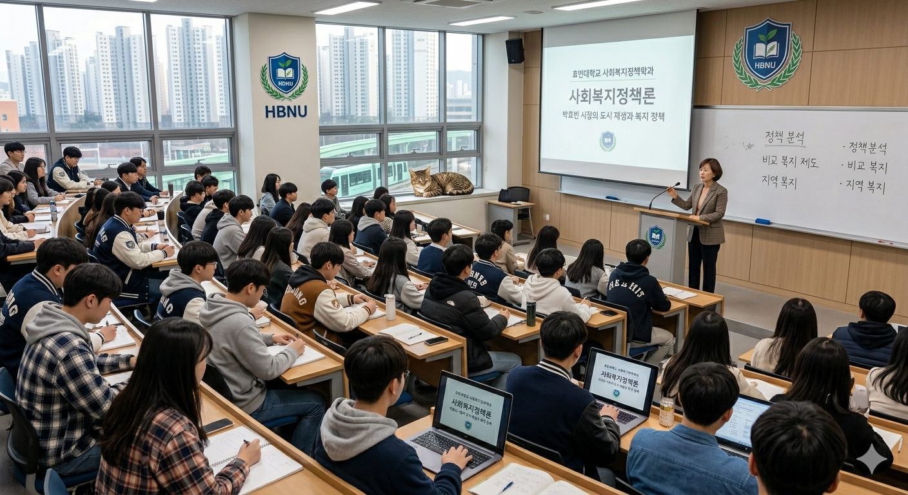

사회복지정책학과
"약자를 위한 따뜻한 가슴, 세상을 바꾸는 냉철한 정책"
Department of Social Welfare Policy
학과 소개 및 교육과정

학과장 인사말
최현우 교수 (사회복지학 박사 / 효빈대 동문)
"안녕하십니까, 효빈대학교 사회복지학과 9X학번 최현우입니다. 모교의 강단에서 후배 여러분을 만나게 되어 영광입니다.
복지는 단순한 시혜가 아닙니다. 복지는 사회의 구조를 설계하는 가장 정교한 과학입니다.
박효빈 시장을 배출한 명문 학과의 자부심으로, 저와 우리 교수진이 여러분의 꿈을 현실적인 정책으로 실현시켜 드리겠습니다."

전국 유일의 단과대학 규모인 사회복지학대학의 핵심 학과입니다. 사회복지사 1급 국가자격증 취득을 위한 필수 과목은 물론, 국가와 지자체의 복지 제도를 기획, 분석, 평가하는 거시적 전문가(Macro Practitioner)를 양성합니다.
최연소 광역단체장 배출의 산실
대한민국 헌정 사상 최연소 광역자치단체장인 제29대 박효빈 효빈광역시장(15학번)의 직속 학과입니다. 현장 중심의 실천적 학풍이 지자체 핵심 정책으로 직결되고 있습니다.
행동하는 지성
약자를 보호하고 사회적 부조리에 맞서는 투철한 정의감을 실천합니다. 사회적 혐오와 차별 범죄에 대해 가장 먼저 연대하여 목소리를 내는 올곧은 전통을 지니고 있습니다.
학년별 교육 과정
| 학년 | 전공필수 | 전공선택 | 학과 특화 |
|---|---|---|---|
| 1학년 | 사회복지학개론 인간행동과 사회환경 |
자원봉사론 | 사회문제와 공공정책 정치와 복지 |
| 2학년 | 사회복지실천론 사회복지정책론 |
장애인복지론 청소년복지론 |
빈곤론 지방자치와 복지행정 |
| 3학년 | 사회복지행정론 지역사회복지론 |
정신건강사회복지론 프로그램개발과평가 |
효빈시 복지정책 분석 사회복지 빅데이터 분석(R) |
| 4학년 | 사회복지현장실습 | 노인복지론 사례관리론 |
정책제안 캡스톤디자인 비영리조직 경영론 |
